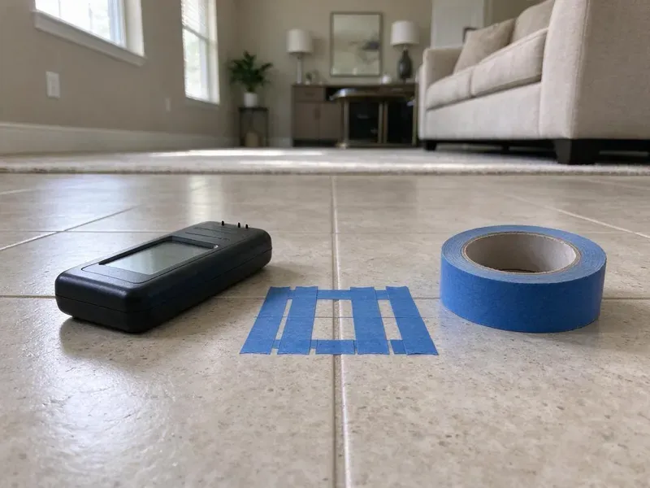

New Construction Plumbing in Biloxi, MS
Building a new home in Biloxi, MS? The plumbing has to be right before the slab goes in. We get it right on the first inspection.
- Fast Project Consultations
- Fast Project Starts
- Experienced Plumbers
- Code Compliant

Expert New Plumbing Installation for Your Project in Biloxi, MS.
Get an itemized new construction plumbing quote from DFM Plumbing in a few days.
New Construction Plumbing in Biloxi, MS Built for Mississippi Conditions
DFM Plumbing plumbs new homes and additions in Biloxi, MS, beginning with the under-slab drains well before any concrete goes down. Then come top-out and trim. Every stub-out is set from the approved plans and the cabinet shop drawings. A missed stub-out costs a day of rework.
Some of what we do:
- Rough-in plumbing for new homes and light commercial work.
- Fixture setting for kitchens and baths during trim-out.
- Water supply piping plus drain, waste and vent systems.

Additional Plumbing Maintenance Services in Biloxi, MS
Our maintenance and specialty plumbing services in Biloxi, MS catch small problems before they become emergencies.


Customers
Why Choose DFM Plumbing for New Construction Plumbing in Biloxi, MS?
Builders tell us the biggest problem with other plumbers is no-shows. We text the super the evening before each phase. If a pour gets pushed, we move our date the same day and keep the slot open for the new one instead of booking someone else into it. One rained-out pour costs you a day, not a two-week wait for a plumber.
- Timely Completion, We coordinate with framers and electricians so the next trade is never waiting on us.
- Long-Life Materials, Piping and fixtures are matched to Mississippi climate and soil, with insulation where freezing is a risk.
- Proper Materials, We pick pipe and fittings for the local water and soil, not just for the lowest price.
Citywide Coverage
Guest houses behind existing homes are a big part of our infill work. Access is the hard part. We often hand-dig a trench along a side yard to reach the existing sewer and water service when a mini excavator cannot fit through the gate.
Experienced Team
Our crew leads have plumbed hundreds of houses on slabs and crawlspaces. Each lead reads plans. That matters when the architect's drawing shows a toilet over a floor truss or a tub drain right on top of a beam, because a lead who reads plans catches it before drilling.
Safety-First Approach
Code compliance gets checked by us before the inspector sees it. We check trap arm lengths, vent sizes and drain slope against the code tables. Then we test. Drains hold water to the top fitting, and supply piping holds pressure long enough to show a weak crimp.
Trusted Certified Biloxi Plumbing Services Professionals
At DFM Plumbing, we are proud to offer certified plumbing services throughout Biloxi, MS. Those papers on the wall mean something. Our plumbers hold recognized industry credentials, and they follow strict safety and quality rules on every repair, installation and maintenance call we run.
Call Us Now PHCC Plumbing Contractor Recognition
PHCC Plumbing Contractor Recognition Better Business Bureau (BBB) Accreditation
Better Business Bureau (BBB) Accreditation Angi Certified Pro
Angi Certified Pro ISO 9001 Quality Management Certification
ISO 9001 Quality Management CertificationCode-Ready New Construction Plumbing in Biloxi, MS
New Home Plumbing for New Builds in Biloxi
A new single-family house usually needs a 3/4-inch or 1-inch water service, a 4-inch building drain and somewhere between 20 and 40 fixture connections. Iron can leave rusty stains on fixtures and laundry, and sulfur odors often trace back to the water heater anode or the well itself. That water decides our supply material and whether a softener loop goes in at rough-in. Fixture count sets pipe size. Most weak-shower complaints in new homes trace back to a supply line one size too small.

Guest House, ADU and Addition Plumbing in Biloxi, MS
Guest houses and additions have to tie into the existing house without overloading old drain lines. We camera the existing sewer before we connect to it. An old clay or cast iron line with a belly will back up under the new load, so we want to know that before we trench. Water service size gets checked too.
Rough-In Plumbing Services in Biloxi
Rough-in covers every pipe that ends up inside a wall or floor. Holes through bearing studs stay within the framing code limit, usually 40 percent of the stud width. Vents go up through the roof. Every trap arm is sized and sloped for the distance to its vent.
Commercial New Construction Plumbing in Biloxi, MS
Commercial and multifamily jobs run on stamped engineering drawings, so our role is to build what the engineer specified and flag conflicts early. Backflow assemblies and trap primers show up on most of these plans, and food service adds a grease interceptor. Submittals come first. Fixture cut sheets go to the architect before anything is ordered.
Residential New Construction Plumbing in Biloxi
Layout drives cost on a house. Grouping the kitchen, laundry and baths along one wet wall can cut a few hundred feet of pipe out of a plan. We point out those savings during plan review. Moving a toilet on paper is free, and moving it after the pour means a saw and a jackhammer.
Fixture Installation and Trim-Out in Biloxi, MS
After cabinets and countertops are in, we come back for trim-out. We set toilets on fresh rings, hook up faucets with braided supplies and check every angle stop for drips. Then we run water everywhere. A slow drain at trim usually means debris in the line, so we clear it before the final inspection rather than leaving it for the homeowner.
Commercial Plumbing for New Construction in Biloxi, MS
Retail suites and offices usually need ADA restroom layouts, a mop sink and a backflow preventer on the domestic line. Carrier fittings for wall-hung fixtures and accessible heights get set during rough-in. Backflow testers certify the assembly. The test report is in hand before your occupancy inspection.

Permits and Inspections for New Plumbing in Biloxi, MS
Most new homes get a plumbing inspection at underground, another at top-out, and a final. Our crew schedules each inspection and is on site with the test running when the inspector arrives. Green tags go to the super. If the inspector writes a correction, we fix it the same day or the next morning so the slab or drywall date does not move.
New Construction Plumbing Close By in Biloxi, MS
Local builders send us repeat work because our underground crews show up on the day we booked. No-shows cost builders money. A lot of our new build work comes from supers who have used us before. They know we test before we call the inspector and leave the site clean, which is less common in this trade than it should be.
Utility layouts and inspection habits change from one county to the next. We work here every week and know them. That includes where the utility puts sewer taps, how deep the code wants the water service, and which inspectors want the test gauge at the front of the house.
DFM Plumbing at a Glance
- Licensed and insured plumbers serving Biloxi, MS
- 24/7 emergency service with same-day scheduling
- Clear written estimates, no hidden fees
- 4.8-star rated by 503+ Mississippi customers
Biloxi Map
Biloxi Information
- Population
- 48,235
- Area codes
- 228/601/251
- Service area
- Biloxi and communities within 40 miles
- Nearby
- Gulfport, Pascagoula, Hattiesburg, Meridian
Pipe and layout decisions made before the slab is poured shape how the house works for fifty years. Iron can leave orange stains on fixtures and laundry, and sulfur odors often trace back to the water heater anode or the well itself. We size the system and pick materials around that water.
Talk to a Plumber
Reach out to DFM Plumbing for honest, reliable plumbing from people who know the trade in Biloxi, MS.
Our Specialized Plumbing Services in Biloxi, MS
At DFM Plumbing, we handle the full list of plumbing services across Biloxi, MS. From leak detection to full system installs, our team works fast and charges fair prices on homes and commercial properties alike. Take a look at our core services below:


How Our New Construction Plumbing Process Works in Biloxi, MS
We keep new construction plumbing simple: a clear bid up front and a final walkthrough with you.
Request a Quote
Call (601) 265-9260 to talk through your project. We gather the plans and the fixture schedule and book a plan review.
Plan & Design
We review your plans with your builder and adjust the layout for shorter runs. Sizing is checked against code.
Rough-In
We install underground and in-wall piping for supply, drain and vent. Each phase is tested before inspection.
Frequently Asked Questions About New Construction Plumbing in Biloxi
Bathroom count drives the cost more than square footage does. Basement homes can cost more when fixtures sit below the sewer and need an ejector pump. We price gas piping as its own line. Ask us for a number after we see your plans, since square-foot estimates miss too much to be useful.
We handle the plumbing permit work and inspections on our scope. The general contractor normally holds the main permit. Our office then schedules each plumbing inspection, meets the inspector on site, and fixes any correction notice before the next trade needs that wall or slab.
We can run a dedicated return line during rough-in. It gets hot water to the far bathroom in seconds. Compared with a crossover valve at the sink, a dedicated return keeps the cold line cold and works faster. The pump needs an outlet.
PEX-A is our default for water supply in Mississippi homes. It handles heat well and resists the scale and pinhole problems copper can get with aggressive water. We run drains in Schedule 40 PVC. Joints under the slab are kept few, and every turn uses a long sweep so a cable can pass.
The term is written into your contract before work starts. It covers our labor and the fittings we supply. Fixtures, water heaters and PEX systems carry their own manufacturer warranties, and we register water heaters in the owner's name at final so the claim process is simple later.
In many homes, yes. Iron can leave orange stains on fixtures and laundry, and sulfur odors often trace back to the water heater anode or the well itself. Roughing in a loop is cheap now, and adding one after drywall means opening walls. We cap it if you are not ready.
Slab and crawlspace foundations are typical, and soil movement under a slab can crack drain lines and supply pipes. Soil movement works on any pipe buried under concrete. We bed drain lines in sand or gravel, sleeve every pipe that passes through concrete, and use flexible PEX for the water service where code allows it. Sleeves are cheap.
Workmanship is covered under our written warranty, and the length is spelled out in your contract. Manufacturer warranties cover the fixtures themselves. PEX and water heater warranties can run ten years or longer if the matching fittings are used, so we keep each system one brand.
What Our Customers Say About Our Plumbing Experts

Daniel K.
A pipe burst in the garage ceiling at 11 at night. Someone answered on the second ring, and the plumber was in my driveway about fifty minutes later. He shut off the main, cut out the split section, and had water back on before 2 am.
Emergency Plumbing · Hattiesburg, MS
Lisa C.
Water was pouring out from under the washing machine on a holiday weekend. DFM Plumbing talked me through closing the valves over the phone and had a plumber at the house within ninety minutes. It was a burst fill hose.
Emergency Plumbing · Biloxi, MS
Mark T.
The floor drain in our office break room backed up every few weeks. The plumber ran a cable, then put a camera down and found roots at a joint about thirty feet out. Seeing it on the screen made the decision easy.
Drain Cleaning · Biloxi, MSNathan E.
Our tankless heater kept throwing an error code and shutting off mid shower. The tech flushed the heat exchanger, which was full of scale, and replaced a bad flow sensor. Hot water has been steady for half a year now.
Water Heater Repair · Meridian, MS
Karen W.
After our third pinhole leak in copper, we stopped patching. DFM Plumbing gave us a written plan room by room and repiped the house in PEX while we stayed in it. The crew covered our floors every morning and cleaned up every night.
Repiping · Pearl, MS
Laura S.
Our 40 gallon tank started leaking from the bottom after thirteen years. The tech hauled the old one out, set a new unit with a fresh expansion tank, and had hot water running in about four hours. He took the old tank with him too.
Water Heater Replacement · Pearl, MS